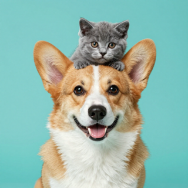

Pfotenpost
Kurze Tipps für Hund & Katze
Worum geht es?
Regelmäßig kurze Videos mit Wissen und Alltagstipps für Hunde- und Katzenhalter: Ernährung, Pflege, Beschäftigung und Sicherheit.
Unsere Videos entstehen mit Hilfe von KI (Text, Stimme und Bilder). Jedes Video wird vor der Veröffentlichung von einem Menschen geprüft. Die Tipps ersetzen keine tierärztliche Beratung – im Zweifel frag deinen Tierarzt.